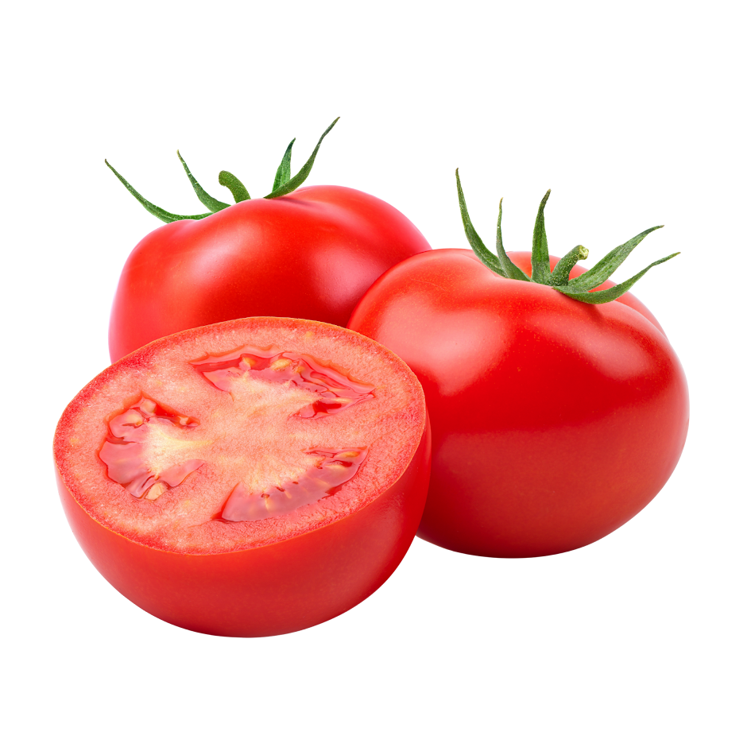

Domaći kečap jednostavan je umak koji možemo pripremiti od svježih rajčica i nekoliko osnovnih začina.
Najbolji rezultat dobit ćemo ako koristimo zrele i mesnate rajčice
Za kečap su odlične mesnate sorte poput Roma i San Marzano. Možemo koristiti i sortu Volovsko srce, ali će tada umak možda trebati duže kuhati.

Link na GoogleDobar kečap treba imati izražen okus rajčice, odgovarajuću gustoću i uravnotežen odnos slatkog i kiselog okusa.
Recept je prilagođen za prbližno 2 kg rajčica. Temperatura kuhanja ne mora biti visoka; važnije je potpuno isparavanje vode.
Za osnovni omjer možemo koristiti:
2 kg rajčica + 50 ml octa + 2 žličice šećera
Kiselost možemo izraziti pomoću pH vrjednosti: pH manje od 45
Kod nekih recepata koristi se i omjer soli od približno 1% ukupne mase sastojaka.
Domaći recept za kečap preporučuje postupno kuhanje kao bi se dobila odgovarajuća gustoća.
Ako želite jači okus, možete dodati malo čilija
Ako želite blaži kečap, samnjite količinu octa i začina.